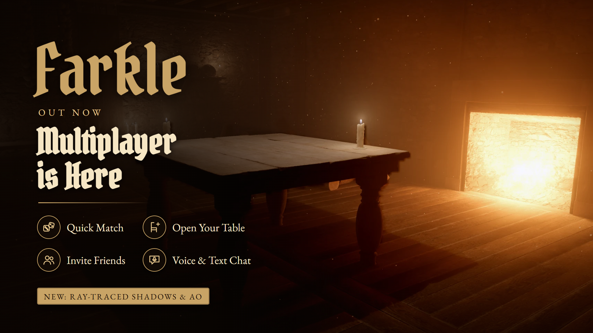
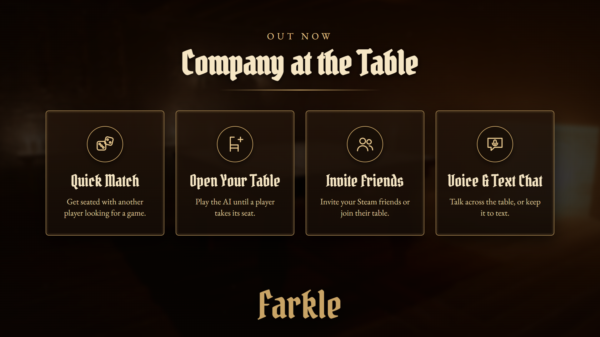
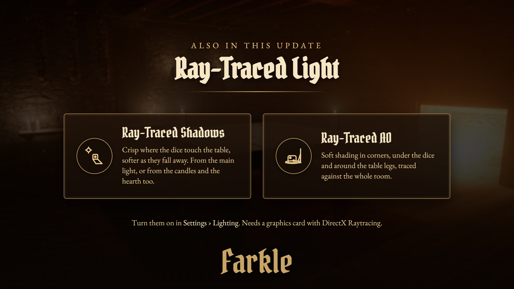

A while ago we promised you wouldn't have to play the tavern's regulars alone forever. Today the wait is over: multiplayer is out now in Farkle: Tavern Dice. Pull up a chair and play against friends, rivals and travellers from all over the world.

Choose Play Online in the main menu.

Hit Quick Match and we'll seat you at a table with another player. If nobody's around, we open a table for you: you start playing the AI right away, and the next player who comes looking takes its seat.
Choose Open Table to start a game against the AI with your table open to the public. You don't wait for anyone: whenever another player comes looking for a match, they take the AI's seat at the next turn, score and all.
Play with Friends opens the Steam invite list. Friends can also join you straight from their Steam friends list, which now shows what you're up to – "Playing online against Marta · 1,250 – 900".
Talk across the table with voice chat, or type in the chat box (Enter sends). Chat goes through Steam's own text filter. With Steam friends your microphone starts on; with players you don't know it starts off. You can mute the other player at any time.
Before the first roll, both players' games agree on the dice together, and the guest's game checks every throw. Nobody can load the dice, not even the player hosting the table.
Each decision has a 30-second timer. If it runs out, the AI finishes that turn for you. If a player leaves, the one who stays plays on against the AI with the score as it stands.
This update also brings two new lighting options for graphics cards with DirectX Raytracing.

Shadows are traced from the light itself, so they're crisp where a die touches the table and grow softer the farther they fall. Choose Sun for the main light, or Sun + Lights to trace shadows from the candles and the hearth too.
The soft shading in corners, under the dice and around the table legs is now traced against the whole room, not guessed from what's on screen. Things just off-screen or hidden behind others still darken what's next to them.
Where to find them: Settings › Lighting › Ray-Traced Shadows, and AO Method › Ray Traced. On graphics cards without ray tracing the options simply don't appear, and the game looks just as it did.
Multiplayer is the first step. Next on the road:
Plans may change as development continues.
Found a bug at the table, or have an idea for multiplayer? Let us know in the Steam discussions – your feedback shapes what we build next.
Someone's waiting at the table.